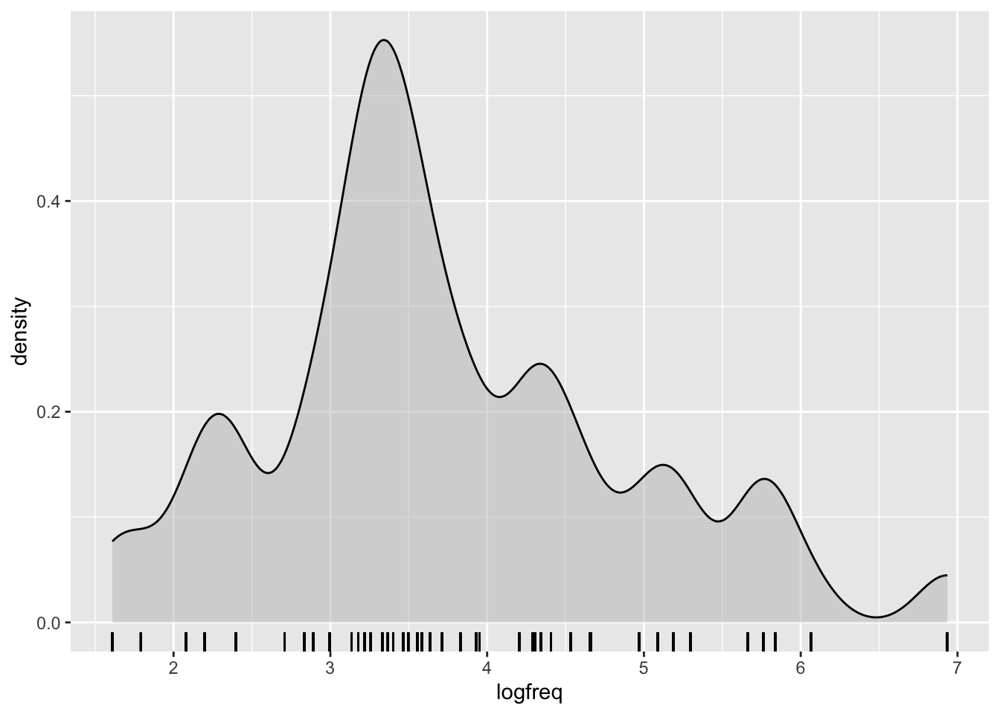
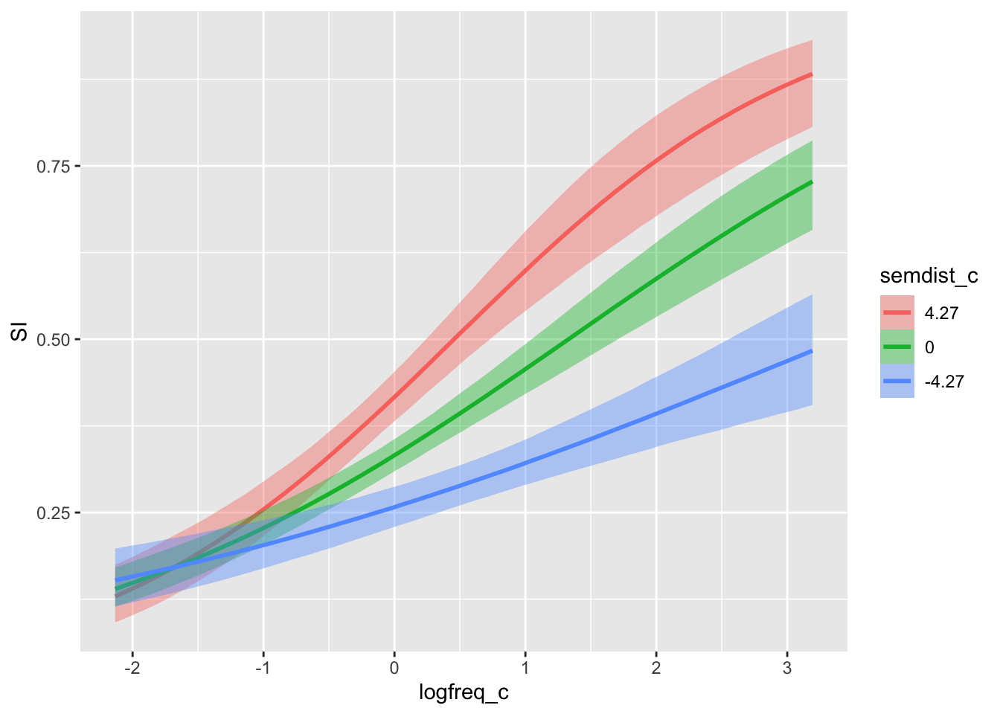
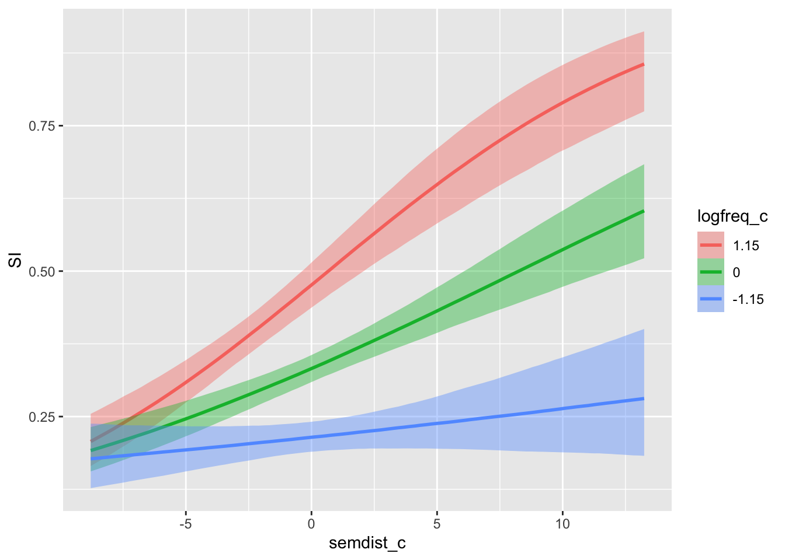

library(tidyverse)
si <- read_csv("data/pankratz2021/si.csv")Regression models: interactions between numeric predictors
Add and interpret interactions of two numeric predictors
1 Introduction
Here you will learn how to include interactions between two numeric predictors and how to interpret the output. Relative to the other combination of predictor types, numeric-numeric interactions are more difficult to interpret: this is because a numeric predictor can take on many numeric values, and the numebr of combinations of values from two numeric predictors is even larger.
2 The data: Pankratz 2021
Let’s read the data.
The variables in this data frame that we’ll refer to in this tutorial are:
weak_adj: The weaker adjective on the tested scale (paired with the stronger adjective instrong_adj).SI: Whether or not a participant made a scalar inference for the pair of adjectives inweak_adjandstrong_adj(no_scalarif no,scalarif yes).freq: How frequently theweak_adjco-occurred with a stronger adjective on the same scale in a large corpus.semdist: A measure of the semantic distance betweenweak_adjandstrong_adj. A negative score indicates that the words are semantically closer; a positive score indicates that the words are semantically more distant (the units are arbitrary).
Before we leap into modelling, though, let’s look in more detail at our predictors freq and semdist. A little bit of pre-processing is needed here, and the next sections will walk you through it.
2.0.1 Recoding SI
Now SI is coded with no_scalar for “participant did not make a scalar inference” and scalar for “participant made a scalar inference”.
Let’s convert SI into a factor with levels in the order c("no_scalar", "scalar") (note that this is the same order as the default alphabetical order, but it does not hurt to specify it ourselves).
si <- si %>%
mutate(
SI = factor(SI, levels = c("no_scalar", "scalar"))
)2.0.2 Transforming and centring freq
Frequencies notoriously yield an extremely skewed distribution, so it’s common practice in corpus linguistics to log-transform them before including them in an analysis.
Here’s how the frequencies look right out of the box:

Log-transforming the frequencies helps to reduce the skewness. Use mutate() to take the log of freq and store the result in a new column called logfreq.
si <- si %>%
mutate(
logfreq = log(freq)
)This is how the distribution of logged frequency looks like:

When we’re interpreting the model estimates below, we’ll be talking about the effect on scalar inferencing of one unit change on the log frequency scale. One unit change corresponds to moving from 0 to 1, from 1 to 2, 3 to 4, and so on…
We’re nearly done with logfreq—all that’s left is to centre it. To centre a variable, we compute its mean and subtract that from every observation of the variable. The goal is to get a new version of variable that has a mean of zero.
si <- si %>%
mutate(
logfreq_c = logfreq - mean(logfreq)
)Don’t take our word! If you take the mean of the centred variable, it will be 0.
round(mean(si$logfreq_c))[1] 0The round() function is included because, for technical computational reasons, the mean actually comes out as an incredibly small number near 0, rather than 0 precisely. But in practice we can consider this incredibly small number near 0 to be 0. If you want to know why it is not precisely 0, see Floating Point Arithmetic.
logfreq_c is now ready to be used in our analyses. Next, you’ll take care of semantic distance on your own, and then we’ll move on to the modelling.
2.0.3 Centring semdist
Use mutate() to create a new, centred variable based on semdist that is called semdist_c. Verify that the mean of semdist_c is 0, and display semdist_c using a density plot with a rug, as above.
3 Visualise the data
Check Advanced plotting for a tutorial on how to plot the data.
4 Fitting the model
Here’s the mathematical specification of the model we’ll fit:
\[ \begin{aligned} \text{SI} & \sim Bernoulli(p) \\ logit(p) & = \beta_0 + (\beta_1 \cdot logfreq\_c) + (\beta_2 \cdot semdist\_c) + (\beta_3 \cdot logfreq\_c \cdot semdist\_c)\\ \end{aligned} \]
Write brm() code for this model, and name the variable you assign the model output to as si_bm.
- The model formula should specify that we are predicting
SIas a function oflogfreq_c,semdist_c, and their interaction. - Use the appropriate model family.
- The data comes from
si. - Specify a seed for reproducibility.
- Specify a file path to save the model fit to a file.1
si_bm <- brm(
...
)Your model summary should look similar to this one.
summary(si_bm) Family: bernoulli
Links: mu = logit
Formula: SI ~ logfreq_c + semdist_c + logfreq_c:semdist_c
Data: si (Number of observations: 2006)
Draws: 4 chains, each with iter = 2000; warmup = 1000; thin = 1;
total post-warmup draws = 4000
Regression Coefficients:
Estimate Est.Error l-95% CI u-95% CI Rhat Bulk_ESS Tail_ESS
Intercept -0.70 0.05 -0.80 -0.59 1.00 3622 2389
logfreq_c 0.52 0.05 0.43 0.62 1.00 3291 2983
semdist_c 0.08 0.01 0.06 0.11 1.00 4171 2722
logfreq_c:semdist_c 0.05 0.01 0.03 0.07 1.00 3891 3009
Draws were sampled using sampling(NUTS). For each parameter, Bulk_ESS
and Tail_ESS are effective sample size measures, and Rhat is the potential
scale reduction factor on split chains (at convergence, Rhat = 1).4.1 Interpreting the estimates
Before we move to interpreting the estimate of this model, let’s just clarify something about numeric predictors and centred numeric predictors.
The numeric predictor gets one coefficient estimate: this is the change in the outcome value when the numeric predictor goes from 0 to 1 (referred to as a unit change).
Note that the same estimate applies when going from 1 to 2, 2 to 3, 4.5 to 5.5 and so on. In other words, the change in the outcome value applies across any unit change of the numeric predictor.
Now, when a continuous predictor is centred, 0 corresponds to whatever value is the mean of the non-centred predictor (1 in the centred predictor corresponds to the non-centred predictor mean + 1 unit, -3 corresponds to the mean - 3 units, whatever the units of the non-centred predictor are, and so on).
Now, let’s interpret the model estimates.
Intercept, \(\beta_0\): When centred log frequency and centred semantic distance are 0, there is a 95% probability that the log-odds of a scalar inference being made lie between –0.80 and –0.59.logfreq_c, \(\beta_1\): When centred semantic distance is 0, for a unit change in (centred) log frequency, the change in log-odds of making a scalar inference is between 0.42 and 0.63 at 95% probability.semdist_c, \(\beta_2\): When centred log frequency is 0, for a unit change in (centred) semantic distance, the change in the log-odds of making a scalar inference is between 0.06 and 0.11, at 95% confidence.
Since semantic distance and log frequency are centred, 0 on the centred predictors corresponds to the mean of the non-centred versions of the predictors. So we can also say:
Intercept, \(\beta_0\): When log frequency and semantic distance are at their mean, there is a 95% probability that the log-odds of a scalar inference being made lie between –0.80 and –0.59.logfreq_c, \(\beta_1\): When semantic distance is at its mean, for a unit change in log frequency, the change in log-odds of making a scalar inference is between 0.42 and 0.63 at 95% probability.semdist_c, \(\beta_2\): When log frequency is at its mean, for a unit change in semantic distance, the change in the log-odds of making a scalar inference is between 0.06 and 0.11, at 95% confidence.
It is customary, when reporting results with centred predictors, to use the “non-centred” version of the report (so you would write e.g. “when log frequency is at its mean” rather than “when centred log frequency is at 0”).
As for logfreq_c:semdist_c, \(\beta_3\): As usual, this coefficient has two interpretations.
Interpreting the interaction between two numeric predictors:
(1) A unit change in (centred) log frequency is associated with a positive adjustment to the effect of (centred) semantic distance between 0.03 and 0.08 log-odds, at 95% probability.
- In other words: As centred log frequency increases, the effect of semantic distance on the probability of a scalar inference being made increases as well.
(2) A unit change in (centred) semantic distance is associated with a positive adjustment to the effect of (centred) log frequency between 0.03 and 0.08 log-odds at 95% confidence.
- In other words: As semantic distance increases, the effect of log frequency on the probability of a scalar inference being made increases as well.
The next section will walk you through how you can calculate conditional posterior probabilities when the model contains continuous predictors.
4.2 Conditional posterior probabilities
In previous weeks, to compute conditional posterior probabilities for categorical predictors, we would take the model equation, substitute the \(\beta\) coefficients with the estimates of the model and then calculate the posterior probabilities by substituting the predictor variables with 0 or 1s depending on the level we wanted to predict for.
Back then, it was easy to know which values to set the predictors equal to. But what do we do now that we have a numeric predictor that can, in principle, take on any value?
Rather than looking at the full range of values that the numeric predictor can take on, in practice we still choose just a few representative values to set the predictor to.
A common practice is to use the mean of the predictor and then the value that corresponds to 1 standard deviation above the mean and 1 standard deviation below the mean.
If you wish you can try and work out how to do the calculations yourself using the draws, but luckily there is a function from the brms package that simplifies things.
The function is conditional_effects() (aptly named!). It takes the model as the first argument and then a string specifying the effects to plot, here "logfreq_c:semdist_c" for “logfreq_c, semdist_c and their interaction”.
conditional_effects(si_bm, effects = "logfreq_c:semdist_c")
You will see that the plot has picked representative values for semdist_c (by default these are the mean, and mean \(\pm\) 1 standard deviation. You can calculate the mean and SD of semdist_c yourself to compare). Since we have listed logfreq_c first, the plot shows the entire range of values in logfreq_c.
The effect of log frequency gets stronger with increasing semantic distance.
We can invert the predictors to see the effect of semantic distance at representative values of log frequency.
conditional_effects(si_bm, effects = "semdist_c:logfreq_c")
Here we see that, equivalently, the effect of semantic distance increases with increasing log frequency.
5 Reporting
Now, let’s write a full report of model and results. Fill in the blanks yourself.
We fitted a Bayesian model to scalar inference (absent vs present), using a Bernoulli distribution. We included logged word frequency and semantic distance, and their interaction as predictors. Both predictors were centred.
The model’s results suggest that, when logged frequency and semantic distance are at their mean, the probability of a scalar inference being present is between … and …% (\(\beta\) = …, SD = …). For each unit increase of logged frequency, when semantic distance is at its mean, the probability increases by … to … log-odds (\(\beta\) = …, SD = …). For each unit increase of semantic distance, when logged frequency is at its mean, the probability increases by … to … log-odds (\(\beta\) = …, SD = …). The positive effect of logged word frequency increases with increasing semantic distance, by … to … log-odds (\(\beta\) = …, SD = …).
Footnotes
The first time you run a model with this argument, that’s the version of the model that will be saved and loaded every time after. Beware of this if you use the same
fileargument to run a model that’s different from the final one you’ll want to run!↩︎